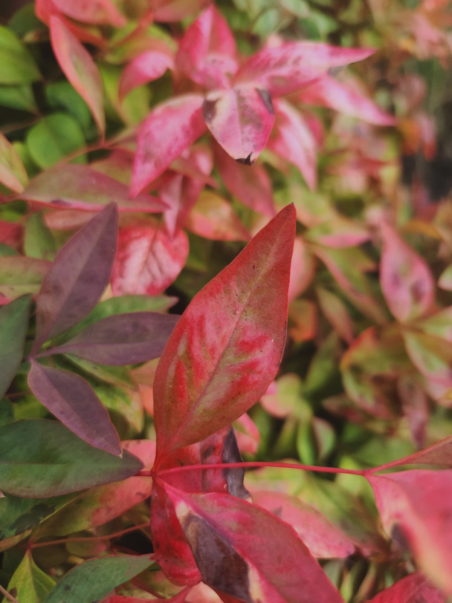
Falloween
Seasonal imagery edited to create a playful fall atmosphere with a slightly strange edge, focused on color, subject placement, and mood.
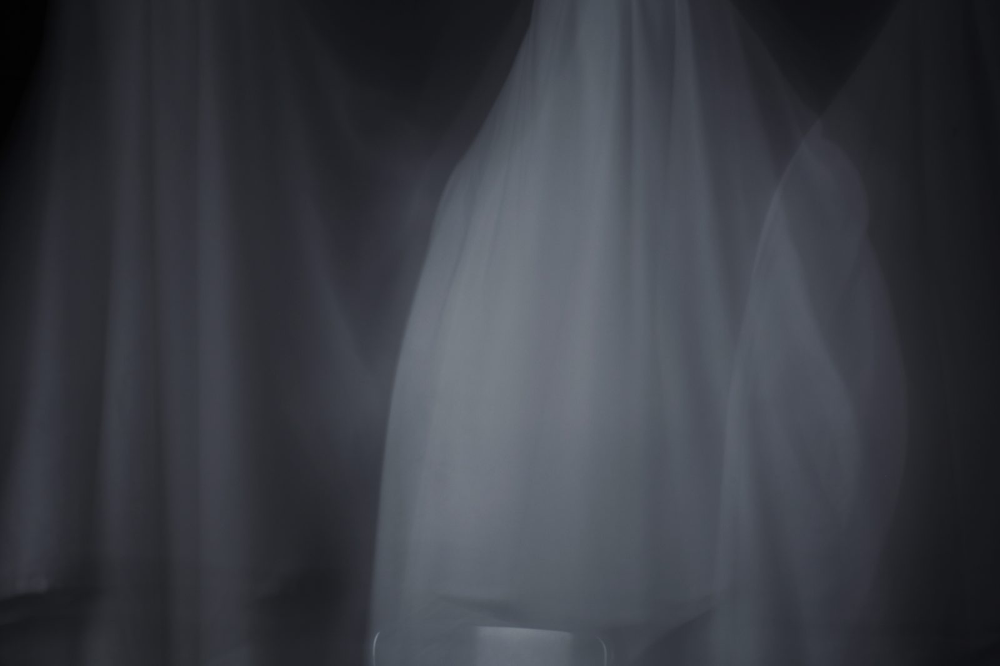
Ghost in Class Photoshoot
Editing that changes an ordinary classroom scene into something surreal, with edited and unedited versions shown together for comparison.
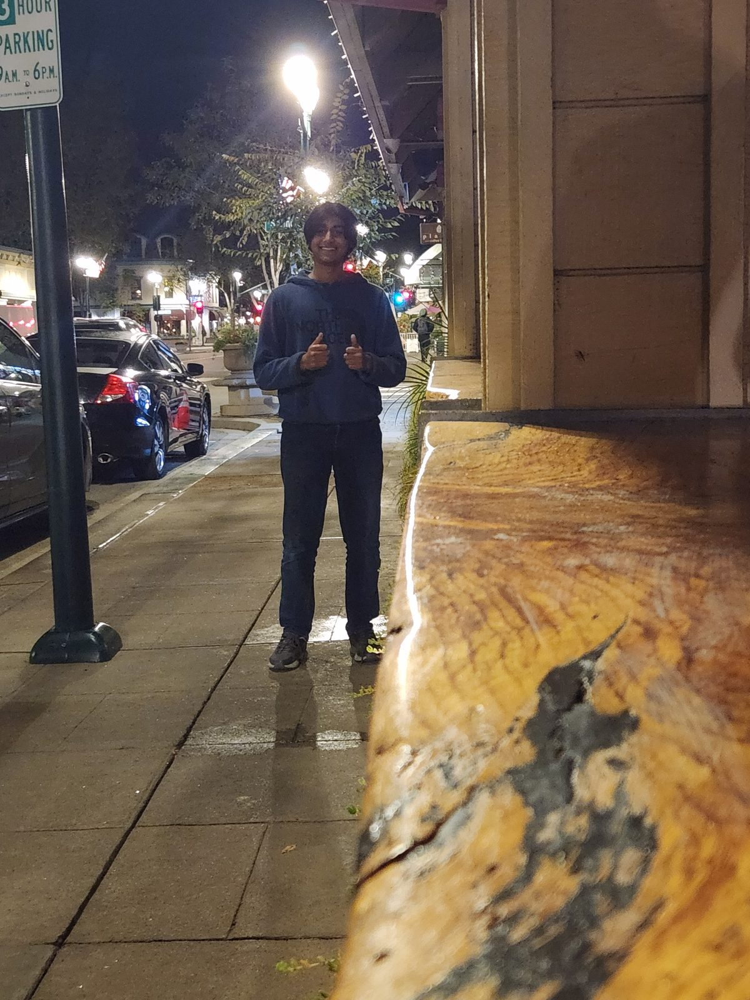
Homework Composition
Practicing compositional tools that make a photograph easier to read: leading lines, framing, rule of thirds, and symmetry.
Sonder Photo Essay
A nine-image essay about noticing that every person has a life as complicated as your own, using repeated human moments and quiet framing.
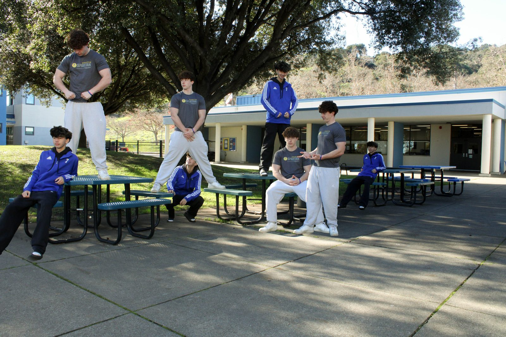
Multiplicity
A composite combining repeated versions of the subject into one believable scene through consistent lighting, scale, and placement.
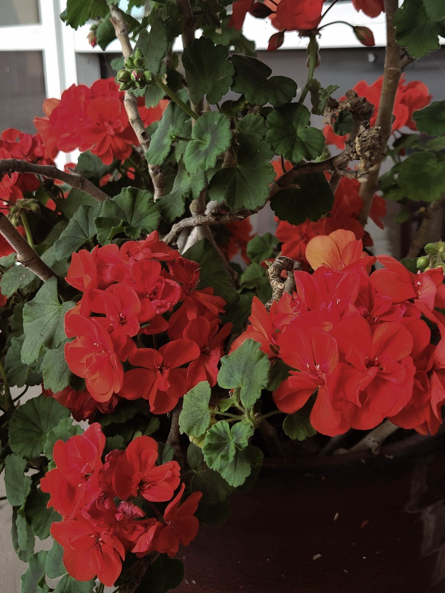
Light and Shadow
Contrast, highlights, and the way shadows define form, with directional light used to make subjects feel more dramatic and dimensional.
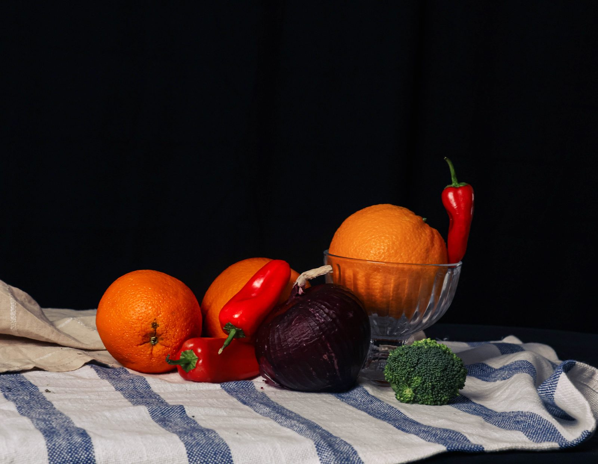
Group Still Life
Careful arrangement of objects, light, and background, with proximity and repeated forms making the setup feel intentional.
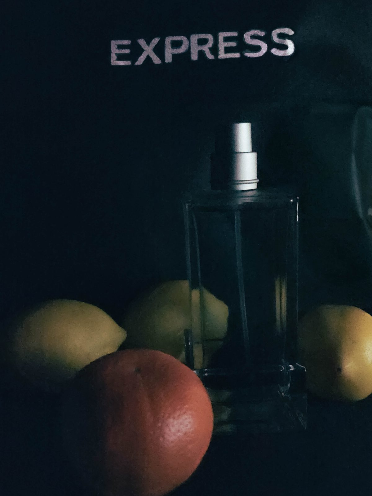
Instagram Ad
Photography as visual communication with a clear audience, with still images and an animated GIF working together as a polished product-style ad.
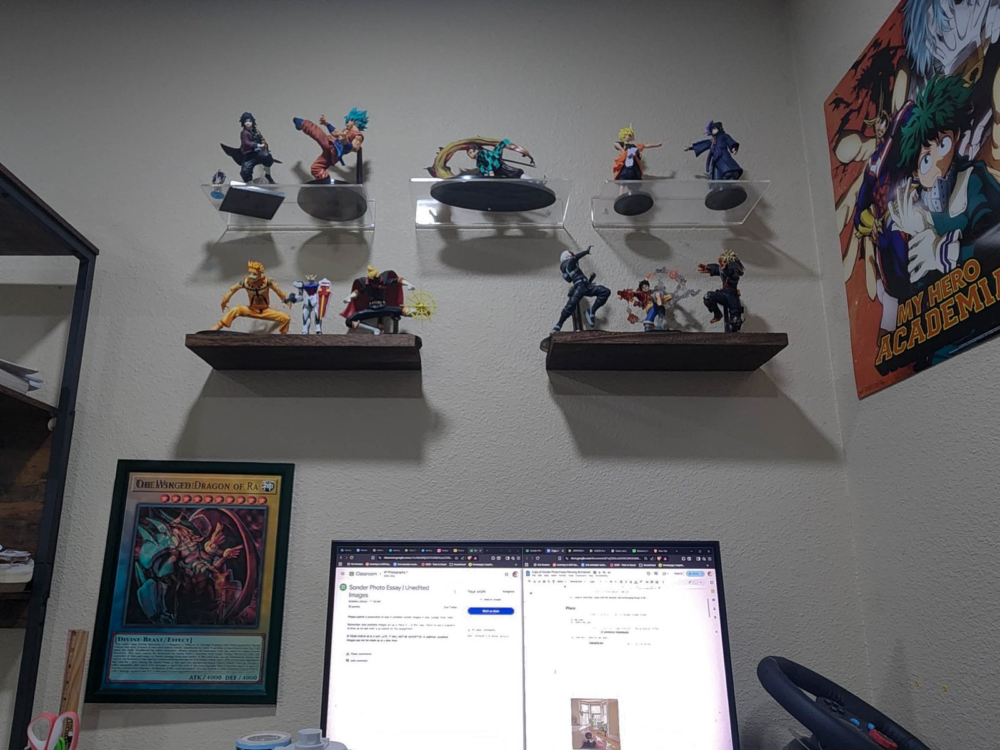
In Class Stop Motion GIF
A sequence of still images creating motion, with small changes between frames building rhythm, pacing, and a simple visual narrative.
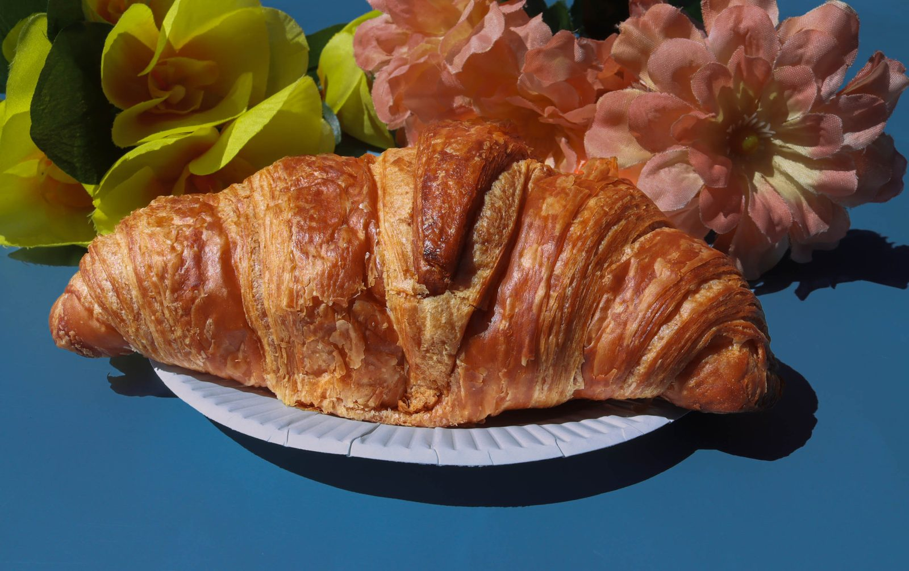
Golden Ratio Food
Mathematical composition through food styling, using spiral, triangle, and phi-based arrangements to create balance and movement.
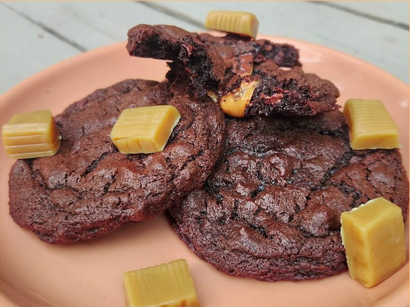
Family Recipe Food Blog
Photography combined with layout and storytelling, with a recipe presented clearly and a favorite food image as the visual anchor.

5 Poses
Posing and presentation studied through a slide deck and a sixth finished image, showing how body position changes the feeling of a portrait.

Treasure Hunts 1-9
Nine images searching for specific visual ideas: depth, color, rhythm, diffusion, and other compositional prompts across the year.

Photoshop Journals
Editing experiments and finished digital work documenting growth in using tools intentionally while tracking process and choices.
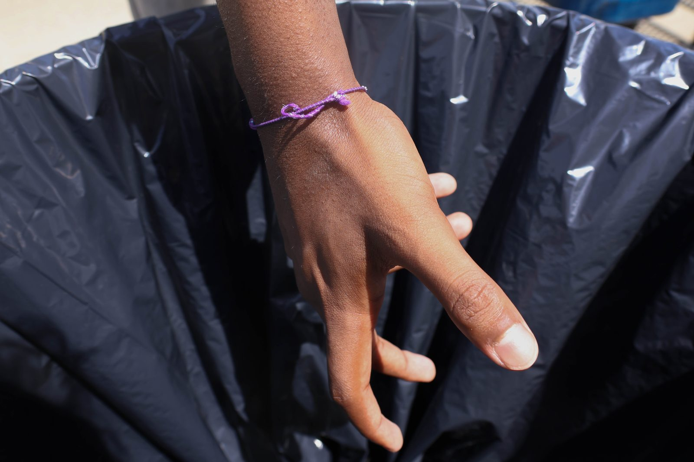
Hands Portraits
Expression without a face, with gesture, texture, and light as the main tools for showing personality and mood.
Photoshop with Younger Self
This assignment was excused.
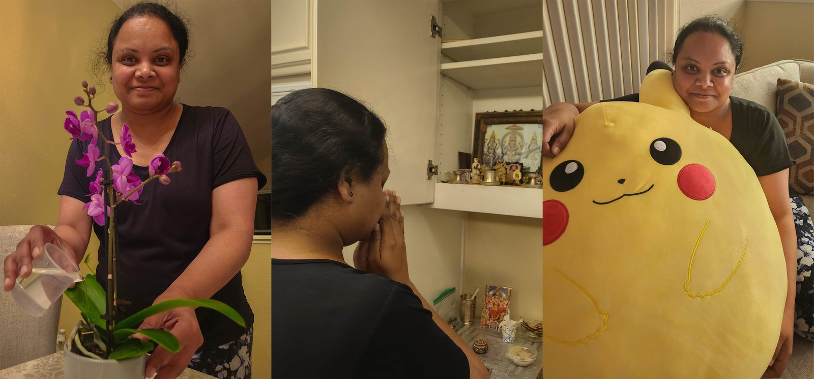
Portrait This or That
A triptych format expressing the identity of the subject, giving a glimpse into the workings of my mom's daily life.
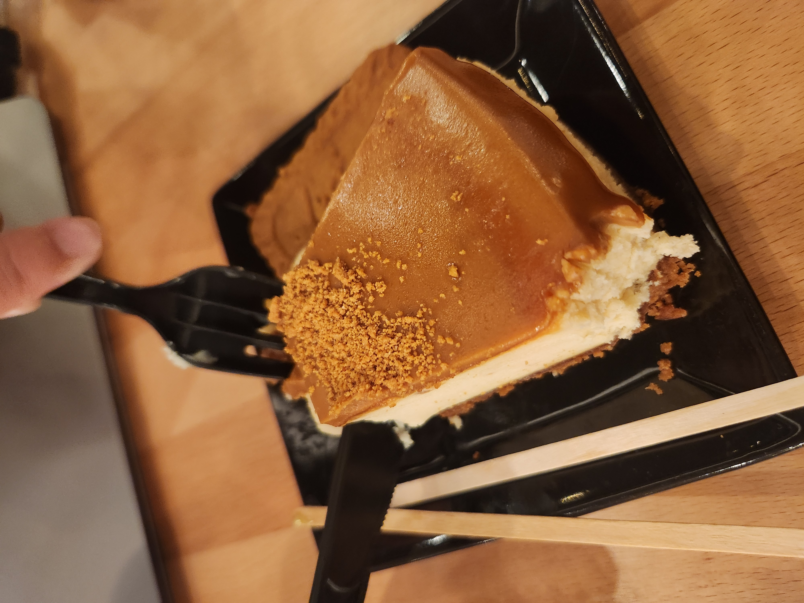
Cafe with Friends
An extra credit project photographing a night out at Qamaria Yemeni Coffee, capturing details, food, and atmosphere of an evening with friends.